Keyword type: step
This option is used to change the iteration control parameters. It should only be used by those users who know what they are doing and are expert in the field. A detailed description of the convergence criteria is given in Section 6.10. There are two, mutually exclusive parameter: PARAMETERS and RESET. The RESET parameter resets the control parameters to their defaults. The parameter PARAMETERS is used to change the defaults. It can take the value TIME INCREMENTATION, FIELD, LINE SEARCH, NETWORK, CFD or CONTACT. If the TIME INCREMENTATION value is selected, the number of iterations before certain actions are taken (e.g. the number of divergent iterations before the increment is reattempted) can be changed and effect of these actions (e.g. the increment size is divided by two). The FIELD parameter can be used to change the convergence criteria themselves.
LINE SEARCH can be used to change the line search parameters (only for face-to-face penalty contact). The line search parameter scales the correction to the solution calculated by the Newton-Raphson algorithm such that the residual force is orthogonal to the correction. This requires the solution of a nonlinear equation, and consequently an iterative procedure. In CalculiX this procedure is approximated by a linear connection between:
With the NETWORK parameter the convergence criteria for network iterations can be changed. The parameters 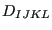,  and 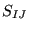 express the fraction of the mean energy balance, mass balance and element balance the energy balance residual, the mass balance residual and the element balance residual is not allowed to exceed, respectively. The parameters
and 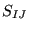 express the fraction of the mean energy balance, mass balance and element balance the energy balance residual, the mass balance residual and the element balance residual is not allowed to exceed, respectively. The parameters  ,
,  , 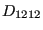 and is the fraction of the change in temperature, mass flow, pressure and geometry since the beginning of the increment the temperature, mass flow, pressure and geometry change in the actual network iteration is not allowed to exceed, respectively. The same applies to the parameters 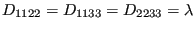, 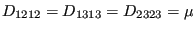, 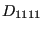,
, 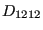 and is the fraction of the change in temperature, mass flow, pressure and geometry since the beginning of the increment the temperature, mass flow, pressure and geometry change in the actual network iteration is not allowed to exceed, respectively. The same applies to the parameters 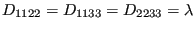, 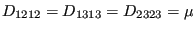, 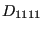,  , 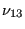,
, 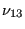,  and 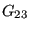, except that they are absolute values and not fractions, e.g. the mean enery balance residual should not exceed etc. Therefore they have appropriate units.
and 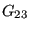, except that they are absolute values and not fractions, e.g. the mean enery balance residual should not exceed etc. Therefore they have appropriate units.
With the CFD parameter the maximum number of iterations in certain fluid loops can be influenced. A fluid calculation within CalculiX is triggered at the start of a new mechanical increment. This increment is subdivided into fluid increments based on the physical fluid properties. For each fluid increment iterations are performed. Usually, iterations are performed until convergence of the fluid increment or until the maximum allowed number of iterations is reached. This is the first parameter  (“transient”). In fluid calculations the unknowns in the equation systems are the quantities (velocity..) at the element centers. The values at the face centers and the gradients are calculated based on these element center quantities. In case the mesh is not orthogonal, iterations have to be performed. The number of these iterations is expressed by (“geometry”) and (taking non-orthogonality into account in the pressure correction equation, “pressure”). This is the second and third parameter. For a perfectly rectangular grid these values can be set to zero. Finally, the parameter
(“transient”). In fluid calculations the unknowns in the equation systems are the quantities (velocity..) at the element centers. The values at the face centers and the gradients are calculated based on these element center quantities. In case the mesh is not orthogonal, iterations have to be performed. The number of these iterations is expressed by (“geometry”) and (taking non-orthogonality into account in the pressure correction equation, “pressure”). This is the second and third parameter. For a perfectly rectangular grid these values can be set to zero. Finally, the parameter  specifies how many coupled pressure-temperature iterations have to be performed. For incompressible flow the default value of 1 should not be changed. For inviscid compressible flow this value may have to be increased up to 4, whereas for viscid compressible flow this value has rarely to be changed.
specifies how many coupled pressure-temperature iterations have to be performed. For incompressible flow the default value of 1 should not be changed. For inviscid compressible flow this value may have to be increased up to 4, whereas for viscid compressible flow this value has rarely to be changed.
Finally, the CONTACT parameter is used to change defaults in the face-to-face penalty contact convergence algorithm (cf. Section 6.10.2). This relates to
First line:
There are no subsequent lines if the parameter RESET is selected.
Following lines if PARAMETERS=TIME INCREMENTATION is selected:
Second line:
Third line:
Following line if PARAMETERS=FIELD is selected:
Second line:
Following line if PARAMETERS=LINE SEARCH is selected:
Second line:
Following line if PARAMETERS=NETWORK is selected:
Second line:
Third line:
Here, [M], [L], [T] and [t] are the units for mass, length, temperature and time.
Following line if PARAMETERS=CFD is selected:
Second line:
Following line if PARAMETERS=CONTACT is selected:
Second line:
Example: *CONTROLS,PARAMETERS=FIELD 1.e30,1.e30,0.01,,0.02,1.e-5,1.e-3,1.e-8
leads to convergence in just one iteration since nearly any residuals are accepted for convergence ( 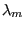 and .
Example files: beammrco.